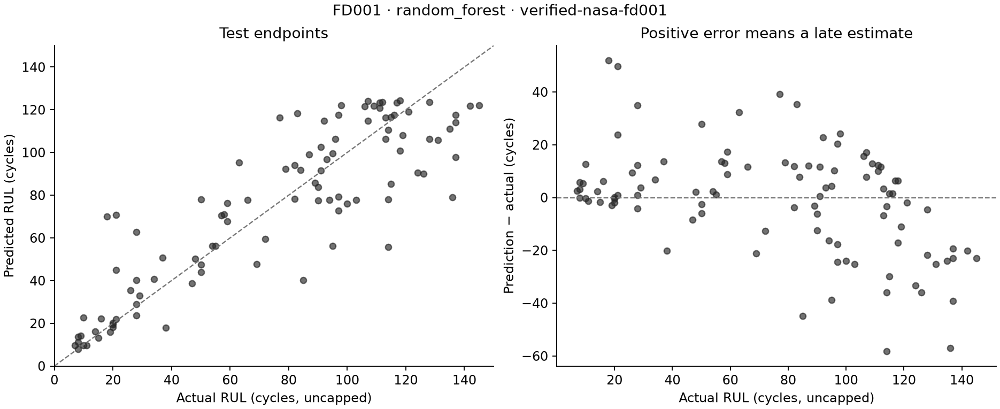
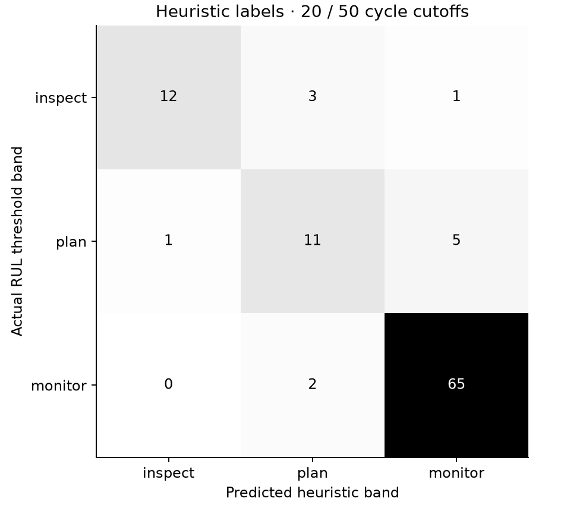

Predictive Maintenance
C-MAPSS FD001 · verified-nasa-fd001
Selected on 20 held-out training engines:
random_forest.
Refit on all 100 training engines before test evaluation.
Validation, capped RUL
| Model | RMSE (cycles) | MAE (cycles) |
|---|
| mean_baseline | 33.77 | 27.76 |
| ridge | 22.51 | 18.80 |
| random_forest | 16.90 | 12.82 |
| xgboost | 17.59 | 14.11 |
Test endpoints, uncapped RUL
100 engines · RMSE 20.21 cycles ·
MAE 14.92 cycles.


Limits
Simulated engine data. RUL is measured in operating cycles, not hours.
The 125-cycle target cap is a modeling choice. Bands and the RUL index are heuristic labels,
not calibrated failure probabilities. This experiment is not an operational safety system.
See complete metrics and provenance and
per-engine predictions.